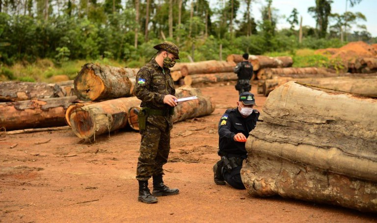

AMAZÔNIA
Operação Verde Brasil 2 evidencia a importância do combate aos crimes ambientais
Publicado em 20/11/2020 11h25

Militares das Forças Armadas atuam há mais de seis meses no combate aos crimes ambientais e na prevenção de queimadas na Amazônia Legal. A Operação Verde Brasil 2, coordenada pelo Ministério da Defesa, evidencia a importância de ações constantes para proteção do patrimônio ambiental.
A missão teve início em 11 de maio deste ano e prosseguirá até 30 de abril de 2021. Até o momento, as patrulhas navais, terrestres e aéreas asseguraram o combate a mais de 7,5 mil focos de incêndio. Nas atividades desenvolvidas pelos militares, foram empregadas 79 viaturas, 26 embarcações e quatro aeronaves.
As ações de desmatamento e garimpo ilegal também estão no alvo dos esforços da Marinha, Exército e Aeronáutica na Garantia da Lei e da Ordem. Nesse contexto, 2.244 militares e 399 agentes atuam nos estados do Amazonas, Roraima, Rondônia, Amapá, Pará, Mato Grosso, Mato Grosso do Sul e Goiás.
Ações subsidiárias ocorrem na faixa de fronteira, nas terras indígenas e nas unidades federais de conservação ambiental. Foram estabelecidos postos de bloqueio e controle de estradas e de bases, planejamento e análise de alvos. Na quarta-feira (18), 133 embarcações foram inspecionadas. Dessas, sete foram apreendidas e 16 autuadas. Os militares também atuaram na vistoria de 73 veículos.
A missão é coordenada pelo Centro de Operações Conjuntas do Ministério da Defesa e conta com o apoio do Comando Conjunto Norte (CCjN), do Comando Conjunto Amazônia (CCjA), do Comando Conjunto Oeste (CCjO) e do Comando de Operações Aeroespaciais (COMAE), da Força Aérea Brasileira (FAB). A articulação com as Forças Armadas conta com a cooperação de agentes de Segurança Pública e de Proteção Ambiental.
Fonte: Governo do Brasil
Foto: Ministério da Defesa